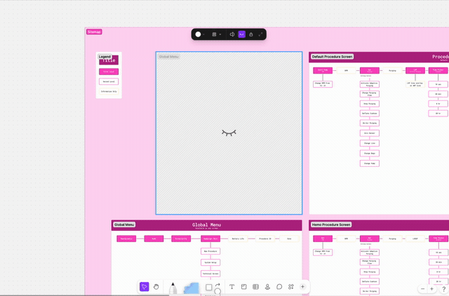
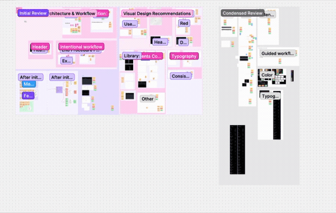
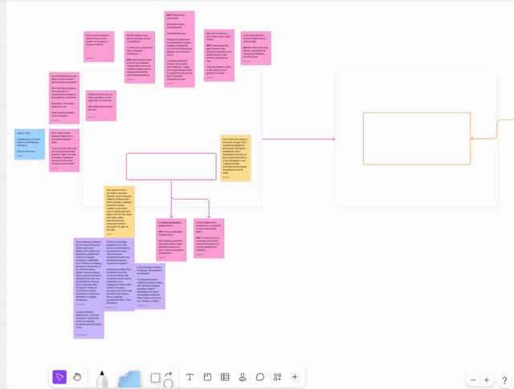
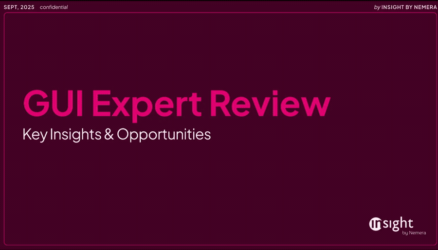
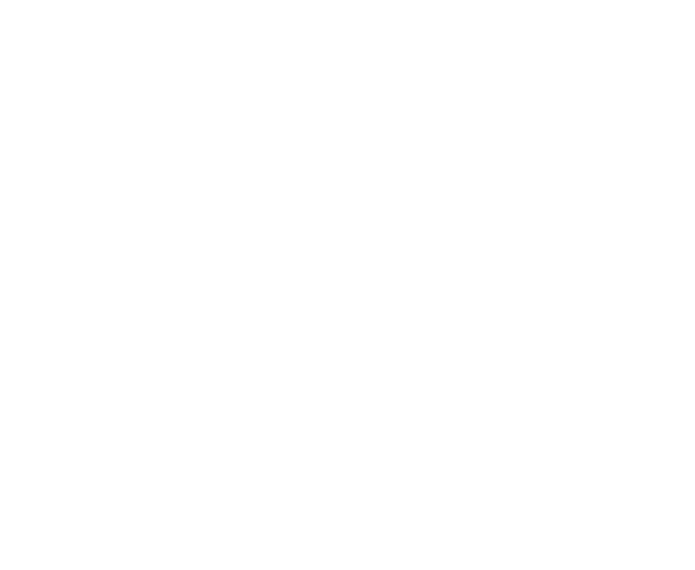

A full-system expert review for a confidential international cardiac device platform.
The Ask
The client, an international company building a cardiac device platform spanning both marketplace-facing and admin/provider-facing portals, brought me in to conduct an independent expert review of the platform's user interface. The company's identity is withheld under NDA. The goal was to surface usability risks and opportunities before committing further design or engineering resources to the platform.
My Role
UX/UI Designer, June 2025 to September 2025. My responsibilities included:
A structured heuristic evaluation, not a redesign engagement.
We approached this as a structured heuristic evaluation rather than a redesign engagement. The goal was to surface and prioritize usability risk, not to hand the client a new interface.
I evaluated the platform against Nielsen's 10 usability heuristics, plus one additional heuristic added specifically for this platform, giving the review a lens suited to a cardiac device system rather than a generic consumer product.
With an international client and many stakeholders wanting input, redundant feedback was a real risk. I ran at least six full-team review sessions, alongside additional smaller working sessions with one or two stakeholders at a time, a cadence that kept feedback moving forward instead of circling back on the same notes from different people.
Mapping the full system.
Before evaluating anything, I deconstructed the whole system, mapping every screen and flow across both the marketplace and admin/provider portals to understand the platform's full scope.
I set up a dedicated FigJam workspace organized into three distinct pages:
This split kept the volume of conversation productive. Internal thinking stayed internal, client questions had one home, and the sitemap gave everyone, across every meeting, a shared reference point for exactly what was being reviewed.

Sitemap
Sitemap after deconstruction of system workflows.

Internal Page
Internal page with initial reviews, workflow, and visual design recommendations.

Client Workflow
Client facing workflow used in client sessions for alignment. Images left blank for client confidentiality purposes.
Setting the lens and the structure.
With the system mapped, I defined the two things that would shape everything downstream: the evaluation lens and the reporting structure.
Defining these upfront meant every finding, across dozens of screens and however many meetings, had a consistent place to land.
Evaluating screen by screen.
I worked through the platform screen by screen against the defined framework, documenting findings within each thematic category:
A GUI Expert Review deck.
The final output was a GUI Expert Review deck: a cover and agenda, three heuristic-themed sections (Navigation & Workflow, Layout & Visual Structure, Visual Communication), and an appendix covering content and typography detail alongside full sitemaps for both the Marketplace and Admin/Provider portals.

Findings were distilled into a prioritized list of action items, handed off for the client to triage and sequence according to their own roadmap, rather than a fixed redesign path. For an international client with many stakeholders and no prior usability review, the outcome was a single, unified, actionable view of the platform's usability gaps, delivered without the chaos of redundant feedback loops.

More case studies
MatchX
Unifying three fragmented histocompatibility tools into one platform, from research through FDA clearance.

MatchX Training Tool
Teaching the platform before the platform ships, an in-app training module built alongside the product itself.

Apheresis Device
Speed for experts, clarity for beginners, a next-generation GUI for operators of all levels.
🔐 Nothing shady. Just under NDA.